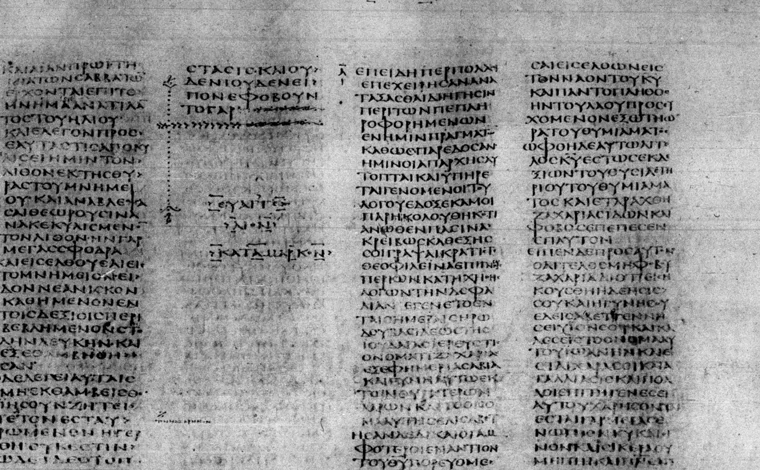
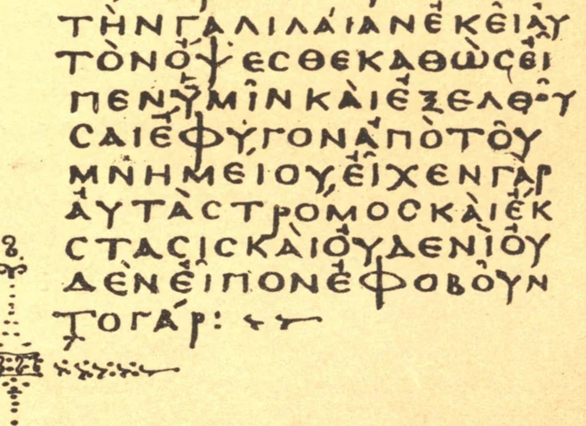
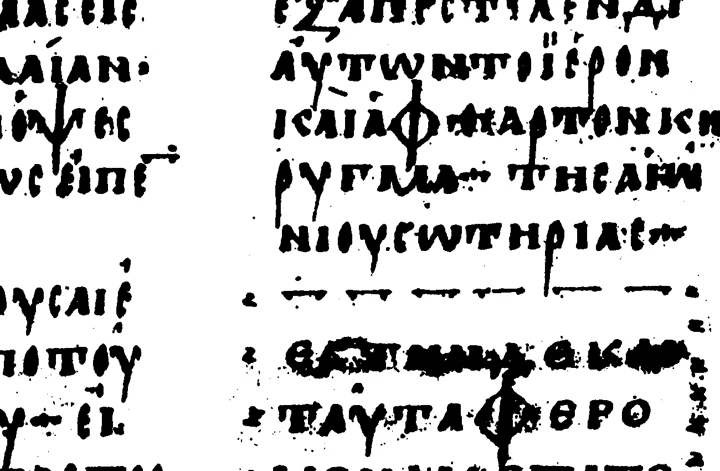
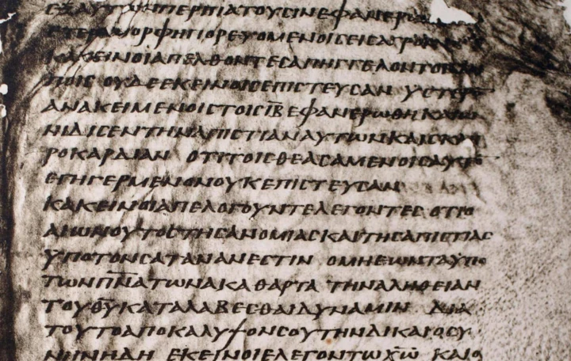
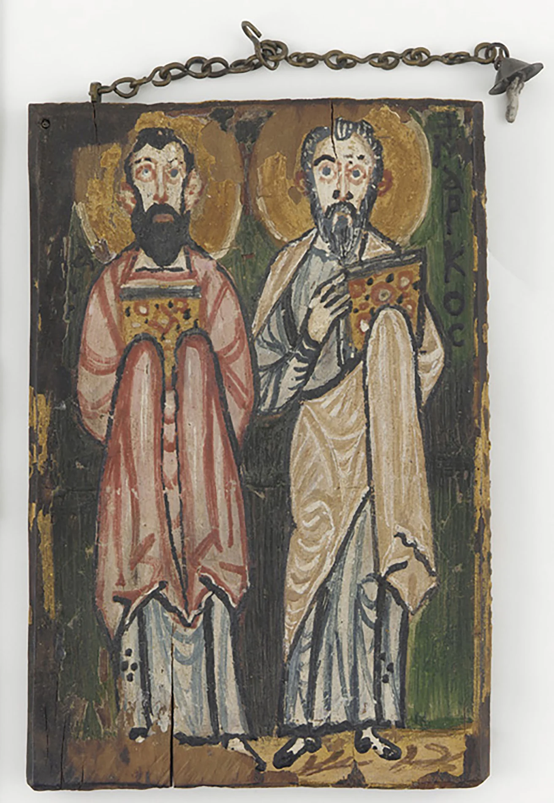

Codex Sinaiticus
The title of Mark follows verse 8. Look near the top of the second column.
Lake facsimileSome copies close with the women afraid at the tomb. Others tell of the risen Jesus. What can the surviving pages tell us about where Mark ended?
Open a facsimile at full size and follow the scribe’s decision at verse 8.

The title of Mark follows verse 8. Look near the top of the second column.
Lake facsimile
The subscription closes column two. The next column is blank on the complete page.
Vatican Library
Two notices in the right column introduce different continuations.
NTVMR transcription
An extra dialogue falls between verses 14 and 15. Verse 20 survives on the next page.
Freer Gospels recordBegin at the women’s silence, then read the two continuations that circulated after it.
The manuscripts tell us where surviving texts end. An author’s intention requires a further inference.
The earliest recoverable text ends at 16:8.
Mark may have intended the silence to be his final scene. That is a more tentative judgment. The Longer Ending was already being read as Mark by about AD 180.
The Longer Ending has 167 words. Sixteen of its Greek dictionary headwords occur nowhere else in Mark. How often does a passage of the same length score that high?
Move the threshold or change the sample to test how unusual that count is.
We counted each distinct lemma once if all its occurrences in Mark fell inside the passage. The base text has 11,085 words through the final γάρ in 16:8. The separate 34-word brief supplement is excluded. Most comparison windows overlap. The percentages describe this corpus and do not measure the probability of authorship.
Replication script · MorphGNT 6.12 datasetA quotation can be older than the earliest surviving page. A translation can preserve more than one form.

Follow the argument back to the page, edition, or dataset.
Read the full report PDF